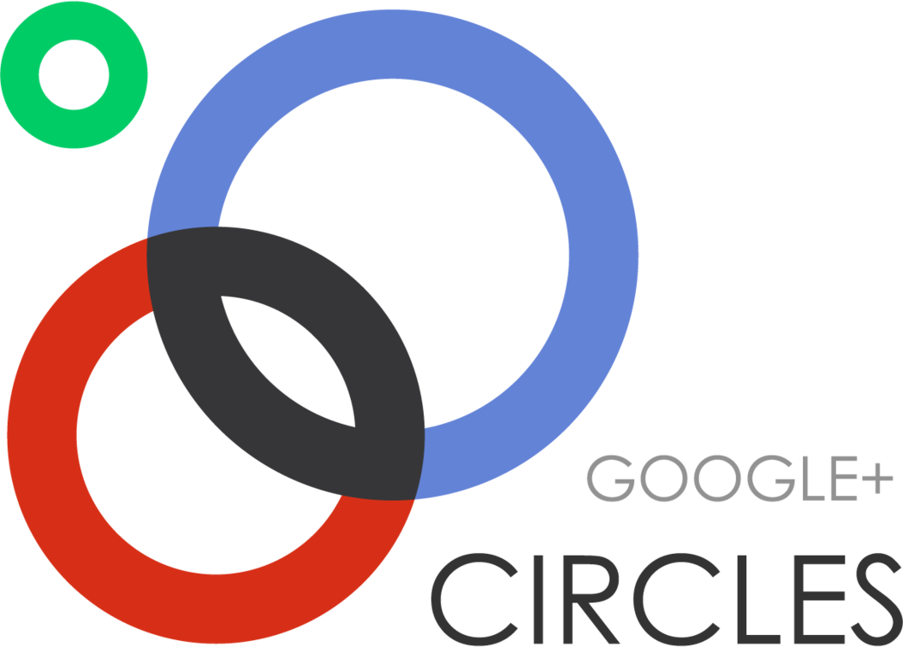

Google+
Google+ Google+ is a social networking service from Google. The project is currently in limited release, and you must receive an invitation from Google or another Google+ member in order to join. The idea is pretty similar to other social networking services, but Google attempts to differentiate Google+ by allowing more transparency in who you share with and how you interact. It also integrates all Google services and displays a new Google+ menu bar on other Google services when you're logged into a Google account.
Google+ will make use of the Google search engine, existing Google Profiles, and the +1 button. Google+ new components include Circles, Huddle, Hangouts, and Sparks.
Circles
 Circles is just a way of setting up personalized social circles, whether they be centered around work or personal activities. Rather than share all updates with an audience of hundreds or thousands, the service aims to personalize sharing with smaller groups. This is a feature already available in Facebook, though many users may just not know how to use it. Google+ users can also make public feeds visible to everyone (even those without accounts) and open to comments from other Google+ users.